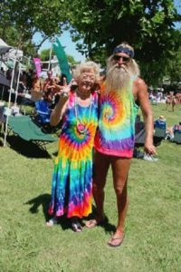
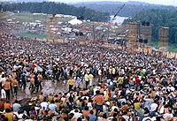
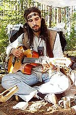

Hippie
 De: La Frikipedia, la enciclopedia extremadamente seria.
De: La Frikipedia, la enciclopedia extremadamente seria.
| De la serie tribus urbanas del mundo:
|
| Hippie
|
Ejemplo de la tribu

|
Dos ejemplares patéticos de hippie
|
|
| Hábitat
|
Campos floridos, cualquier lugar con suficiente césped para hacer un círculo y cantar , fumar y follar
|
| Inteligencia
|
Mediana
|
| Frase favorita
|
Paz hermanos, Paz y amor, Haz el amor y no la guerra, Vietnam libre, ¡¡y el plus pa'l salón!! (en desuso)
|
| ¿Peligroso?
|
Si eres alergico a la marihuana, si.
|
| Obsesión
|
Las flores
|
| Notas
|
Son unos floripondios
|
¡Tibet libre hermanos!
Típica frase de un Hippie
Dícese de especímenes surgidos de hacer de una palestina un complemento de moda mas que se encargan de amenizar fiestas tirando bolas al aire y jugando con "diávolos", intentando tener una personalidad diferente y original, y consiguiendo únicamente ser todos iguales.
Los hippies son gente que va repartiendo amor por el mundo y escuchando la guitarra eléctrica de Jimi Hendrix, pero hoy en día esa tendencia ya no está en boga y al final han tenido que crearse enemigos para poder continuar existiendo y esto les supone una jodienda, ya que su existencia antes espectacularmente anodina y sencilla ha tenido que tomar alguna implicación política para tener una razón de ser. Normalmente los hippies se posicionan en el bando de los rojillos por sus tendencias subversivas.
De todas formas, para poder decir que los hippies son inclasificables, los hay también que no se llevan bien con los rojos sólo por el hecho de que ellos forman parte de uno de los bandos beligerantes.
Son hijos de los rockeros , ya que a veces se confunde y se piensa que es al revés, pero el rock surgió pocos años antes.
Actividades favoritas
Las actividades preferidas de estos especimenes se pueden contener en:
- Drogarse, cojer (follar, fornicar, inautear) entre ellos (sin distincion de sexo), Drogarce mas y cojer hasta no poder más.
- Hacer competiciones sobre quien lleva más piercings en las orejas o a quién le apesta más el
culo pelo.
- Acudir a las manifestaciones u organizarlas por cualquier motivo, como por ejemplo, defender a las pobres moscas del vinagre que se utilizan para fines científicos.
- Protestar por cualquier cosa sin importancia que a nadie le importe.
- Amenizar fiestas con música que a saber de donde viene en un mini-escenario colocado al lado del escenario oficial.
Simbolo Hippie por exelencia.
- Conseguir que los antidisturbios les apaleen.
- Bailar de forma rara dando el cante.
- Escuchar musica de John Lennon.
- Escuchar musica de Janis Joplin.
- Escuchar música de Jimi Hendrix.
 Un Epico Concierto Hippie en el 69'.
- Profesarle admiración a Woodstock y desear que en su ciudad hicieran un festival parecido para estar hasta el culo de drogas y cantar "My sweet lord" moviendo a los lados los brazos y con las tetas al aire (las mujeres), o mientras se bañan en lodo (los hombres).
- Llevar chanclas todo el año (incluso en invierno).
- Pintar una cáscara de castaña de azul, ponerle dos ojos de plástico y vender el monigote a 10 euros en un mercadillo de artesanía callejero.
- Quejarse de un sistema sustentado en el capitalismo, que vende productos manufacturados en paises pobres por 10 veces su precio original, cosa que intentan solucionar vendiendo productos naturales fabricados por ellos, aunque parece que los han hecho unos bebes esquizofrenicos, y venderlos por 20 veces su precio original.
- Sentarse en mitad de la calle a cantar canciones como el Umbaya, a grito pelado y con una guitarra de acompañamiento, aunque la canción sea a piano, y cada vez que alguien les pide amablemente que se muevan ellos le llaman cerdo capitalista y comienzan a gritar no nos moveran durante 1 hora por cada persona que se lo dice.
- Conducir furgonetas denominadas hippies (Volkswagen T2), tuneadas por Ágata Ruiz de la Prada, que por dentro parecen un fumadero de opio, y tan viejas y desvencijadas (teniendo en cuenta que la que menos tiene 40 años) que la unica explicación de por que se mantienen unidas es por intervención divina, y que incumple el tratado de Kyoto de contaminacion, pero en su caso está justificado porque lo hacen para salvar la tierra luchando contra una ley capitalista.
Razas
Hay cuatro tipos de hippies:
- Los hippies de verdad (quedan pocos, el patetico final jipi de los Beatles a finales de los 60's es uno de los ultimos ejemplos)
- Los hippies pijipis (practicamente son como los de verdad, pero actuales) que, teniendo DVD, TV plana, internet, ordenador portátil, ropa de marca, viviendo con sus padres ricos en un chalet o adosado, prefieren dar la nota aparentando lo que no son.
- Los que se cosen a porros y se ponen hasta el culo de ácido lisérgico (LSD)
- Los hippies contemporáneos cuyo único objetivo es fastidiar a sus vecinos, con paranoias tipo quitar amigas/os,novios/as o lo que pueda. Suelen ser personas rechazadas por la sociedad, bastante poco agraciadas y con un grado de acne bastante elevado. Vease Coyoacan Joe.
Hábitat natural
En España, los hippies tienden a concentrarse en la Isla de Mercadillos donde intercambian trozos de cosas supuestamente naturales por cantidades exageradamente altas de dinero, alegando que son artesanales. Cuidado con estas agrupaciones, su inicial inclinación política como rojillos vira peligrosamente a la derecha cuando se trata de dinero.
En el resto de la Península Ibérica se concentran en las calles de grandes ciudades donde la suciedad relativa de la atmósfera sobrepasa el 60%, ya que, tras el paso de unas semanas, se adhiere a su piel creando una armadura de ronchones +4 que les protege del capitalista estándar, pero que también evita que se les acerque cualquier otra persona no hippie. También utilizan este entorno para meter esta atmósfera viciada en fundas para venderlas por 40 euros con el nombre de morcillas vegetales naturales.
Estado Drogado y Droga Interior
Otro aspecto que se puede asociar con los Hippies, es la búsqueda de el Estado alterado de conciencia (Por no decir estado drogado de conciencia). Lo buscan claro por que solo asi pueden aguantar tantan folladas y mota sin consecuencias. Se puede seguir una búsqueda espiritual, ya sea en búsca de Dios, Marihuana, un baño, las llaves perdidas etc. asi es como ves cada vez más y más colores, y claro andas desnudo como si nada, a diferencia de algúnos otros les da pena porque la tienen pequeña. Esta ola de consumir sustancias psicodelicas, mota, o tu peso en heroina la crearon tios como Jimi Hendrix o Jim Morrison, claro tios que se cagan en el sistema. Este sistema fue creado para comunicarte con el vecino que vive justo a tu lado, pero no quieres levantarte y no le compras un pinche telefono al gobierno, entonces entras en este bendito estado y se comunican.
El uso de drogas puede ser así algo recreativo, ya saben para pasar el tiempo y claro porque sin ella no encajas bien con tus amigos. Los tontos con poco coeficiente intectual, critican a las drogas, el alcohol, la cocaína, y el pan blanco ya que todas llevan a este estado solo para iluminados.
Así tambien sera muy frecuente en tu vida de Hippie que escuches como critican a las drogas mayores (porque te drogan aún más) como la marihuana, metanfetamina, heroina, el pelo de un Funk, Barney, LSD y pastillitas de Extasy. Claro tu sabes que consumes drogas como la marihuana, solamente por cuestiones medicinales por que de esa hay bastante en tu jardin y no le quieres dar un centavo al gobierno. O la heroina porque tu abuela te dejo la receta de como hacerla, y bien, ya que. Es así como concluye tu viaje, has alcanzado tu Droga interior!
Enemigos naturales
- El capitalismo ,o cualquier otra ideologia politica que los tengan que hacer trabajar
- Eric Cartman
- Las peluquerías
- Los policias .segun ellos :"los hippies (se escriben hippies ,pero se pronuncian jippis)son
putos"(maricones)
- Los skinheads , ya sean boneheads o red skinheads ya que estos quieren exterminarlos.
- La limpieza.
- El trabajo a no ser que sea algo muy facil que les de el dinero necesario para droga.
- El esfuerzo para algo que no sea drogarse a su puta bola.
- La fidelidad, es mejor rularse las tias , igual que los porros .
- La gente a la que no le gusten los animales, aunque sea por que les tengan alergia, si no tienes al menos 3 perros no eres un buen hippie .
- Yepi por intentar ser hippie y
marica al mismo tiempo fallar y meterse a emo.
- Homer Simpson, por vendido (recordemos que en un determinado momento Homer se convirtió al jipismo, pero un balazo de flor en la frente lo hizo cambiar de opinión)
- El agua y el jabón.
- Las tijeras peines y maquinillas, ya que si no llevas unas greñas asquerosas no puedes ser hippie .
- Las cosas de marca, ya que si compras algo de marca estas financiando el sistema y por lo tanto estás asesinando a niños del tercer mundo directamente.
- Las casas de verdad, ya que si compras una estás aceptando el sistema y contribuyendo a la especulación inmobiliaria y coartando tu propia libertad y cayendo en un circulo vicioso que hace que te acabes suicidando, asi que ya sabes hazte okupa o vive en una comuna, o si no en casa de tus padres , si no vas a morir. (por que comprar una casa es mas peligroso que meterse LSD a saco)
- El nacionalsocialismo , aunque en realidad cualquier sistema va a ser criticado haga lo que haga... aunque les proporcionara droga gratis seguro que lo criticarian igual.
- Los flaites, ya que luchan por quien se lleva el galardon de los mas cochinos y por ello llevan una lucha milenaria por ese titulo.
- El Luisma, ya que entró en porrolandia gracias a ellos. Ahora delira en bancos esperando a que Callejeros le grabe maldiciendolos.
 Un moderno, y actual Hippie.
Aliados:
- Los Rockeros: Son grandes hermanos, compañeros de borracheras, de cacerías de pijos y su música era en un principio la misma. Jamas verán a dos tribus tan unidas.
- Los Jebis: Los Jebis la pasan recordando a estos, entre estos dos, hay mucho respeto.
- Los Funks: Compañeros de sabiduria infinita, exportadores de plantas alucinojenas, maestros de solos a lo mas Funk, comparten mucha psicodelia, parecidos en los colores, y mota.
- Los Grunge: Comparten el gusto por la música y el pelo largo además de las bebidas.
- Los Góticos: Como la mayoría del tiempo están callados en un rincón no molestan a nadie, y estando drogados ni se notan. La mayoría tienen unos gustos musicales pésimos, pero bien que los Hippies saben hacer alianzas.
- Los Frikis: Esta alianza es muy buena, pues gracias a la manera de los Hippies de ver la vida, los Frikis les son muy agradables.
- Los Otakus: Lo mismo que los frikis
- Los Madmaniacos: No hay nada mejor que fuerza bruta y sarcasmo junto para criticar a los enemigos. Además tienen uno que otro amigo en común.
- Los Hombres Lobo: Uno esta hecho un animal, peludo y huele mal, el otro es el Hombre Lobo.
- Rastafaris: Tienen una alianza natural con los Rastas pues se entienden al hablar de las diferentes y grandiosas drogas y bebidas que han experimentado, además de compartir muchas ideas.
| Tribus Urbanas
|
 Universales Universales
 Españolas Españolas
 Argentinas Argentinas
 Chilenas Chilenas
 Colombianas Colombianas
 Mexicanas Mexicanas
 Peruanas Peruanas
 Venezolanas Venezolanas
|
Autor(es):
- Krusher
- Nexo
- Hari Seldon
- NaTTi
- Badajoz11
- EmpollonIntegrista
- Roms
- Viento
- DaniSkater
- Khazike Khashondo
Frikipedia 2005-2016, Licencia
GFDL 1.2 - Extraído por FrikiLeaks